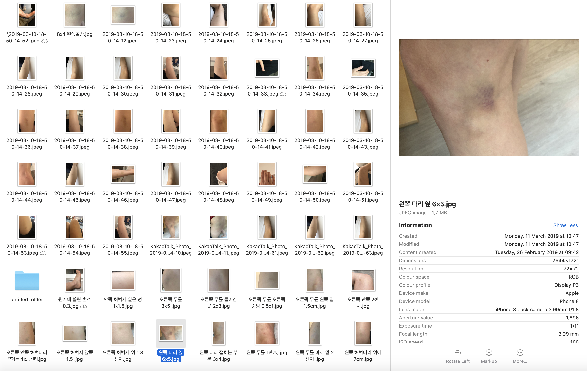

Cognition
Until I was 7, I remember that I had a good memory of figuring out the five senses and enjoyed discovering them through activities. Within a title of creative activities for children, like origami, playing with food, making an inedible food with dirt, learning how to balance my body with eyeshade. But as I grow older and older, I got interested in the activity itself. The interest of the ‘five senses’ itself is less becoming my priority interest. And a decade has passed without thinking much about the sense of cognition.
It was around 2014 when I realized something was wrong. I still remember the words that mom said to me. ‘Are you bullied by someone else in your school?’ And I was, ’What??’. I went to the hospital because of a lot of bruises on my both legs and arms. At that time, I did not like to go to the hospital. The fear came over with ‘What should I do if I have a problem?’. The good part was that the test results were saying that I am healthy and normal, and the downside was ‘Then where these bruises came from?’.
Cognition works in various ways from the moment you open your eyes in the morning to falling asleep at night. Even incomplete cognition works while in sleeping. I wake up in the morning, and sometimes I can remember my dreams so vividly, so that often thinks if it is real. In everyday life, senses (visual, olfactory, auditory, and tactile sense) synchronized spontaneously and works simultaneously. Perceive the outside world and recognize objects through the sensory organs are the basic ability of living things. However, we are hardly aware of cognitive action.
The information received through the sensory organs is just a piece of the external world and objects. Due to the development of knowledge and technology, human cognitive domains and the objects have been expanded through various devices. UV and IR are not visible. The ear can only hear sound in a certain frequency band. There are things that exist but are not perceived by human senses. And devices which are close to our daily life, for example, like eyeglasses, contact lenses and microscopes for helping people to see better, hearing aids and stethoscope to magnify auditory sense.
We live almost without knowing the importance of cognition and cognitive action. It's like living in the atmosphere breathe in oxygen but hardly aware of it. Our choices and actions occur in connection with cognition. If recognition fails to function correctly, choices and actions will also result in poor results.
I am the living result of a malfunction in the cognitive process. Especially, in the context of the cognition of the body. That is why I had so obsessed with bruise when I was taking a theory workshop with Roland Schimmel.
When I first read the article; The art of the relational body, I wanted to research about why and how my body reaction were NOT well-connected to my brain. Reach to a question like ‘Why can’t I directly aware of the pain?’. Then I started to take a picture of myself and tried to record my tactile experiences (bumping to things) with photographs (bruises) and to work on addressing by replacing them with another tactile experience (fluffy room that people cannot get any bruise). The last part was not visualized. Though I bought a home surveillance camera and log one week of my clumsiness –the camera records when I am in the house.

Log of bruises
Not long after I moved to a new house, I was not used to the arrangement of furniture so that I may get more than usual – I moved in 01/02/2019, and the photo was from 05/02/2019 to 26/02/2019 It was an experiment and a record with pure curiosity. To be honest, this log of bruises indicates that I am super clumsy. I made clear evidence of my carelessness and clumsiness. I had a hard time while editing, facing ridiculous behaviors of mine.
video will be added
With the hope that further research in this area would have taken place, I began to work on other kinds of cognitive dissonance. In writing a creative writing course, I wrote passage comes up after undertaking the incense of mint. I wrote about a scene that I had not experienced. The scene rush into my head along with the fragrance, and I did not want to miss those images, so I wrote in Korean right before it disappears. After three revisions, it was translated into English.
Luckily, I have a chance to exhibit at Y2. I translate this writing in two ways; visually and audibly. Because on the train, or while walking, I can hear sounds around me. And the sound is not understood in language, but it sounds like a background noise. When I saw people having so much fun, I could not even dare to try to know what they are talking about. I can only understand people talking in English. Speaking in Dutch is like an encrypted sound to me; on the contrary, audio-visually, Korean is too (for people who can’t speak this language).
I tried to make both audio track’s volume as same as during the audio editing process. Then I was ‘Oh, maybe this process is necessary because I can understand both languages.’.
The work is also transformed into visual work— Collage of texts with different layers.

Y2 Groningen, Oosterhamrikkade 2Y, 9714 BA Groningen-24/05/2019
One minute
I am not a morning type of person. Especially because my body time needs an extra hour to synchronize with real-time. This is something I go through every day, that time is going so fast in the morning and feel like time goes fast on Sunday evening.
The eyes, ears, and brain are cogwheels.
But imagine those gears in the state of neutral gear.
When the neutral gear is inserted, the connected gear falls slightly.
Normally, cogwheels are connected, so when the gears such as eyes and ears are turned. Finally, the gears of the brain work.
Unintentionally, the neutral gear is put in the morning. And make gaps, and the moment of your ‘time’ stops to synchronize with actual ‘time.’
Then, no matter how the wheels of the eyes or ears are turned, they just turn in vain.
Wanted to make a clock looks perfectly rounds 1 minute. But this clock is only 56 seconds with 60 ticks. This is a clock that represents one minute of my morning.
Reference
The Art of The Relational Body: From Mirror-Touch to The Virtual Body, Brian Massumi, 2017, Oxford University Press
Katharina Gsöllpointner,Syn-Aesthetics of Digital Art, 2016, De Gruyter
Translated book of Seit Und Zeit, Maerin Heidegger, 1927
존재와 시간, 마르틴 하이데거 지음, 이기상옮김, 까치, 1998